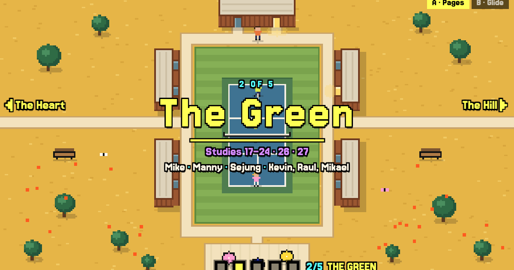
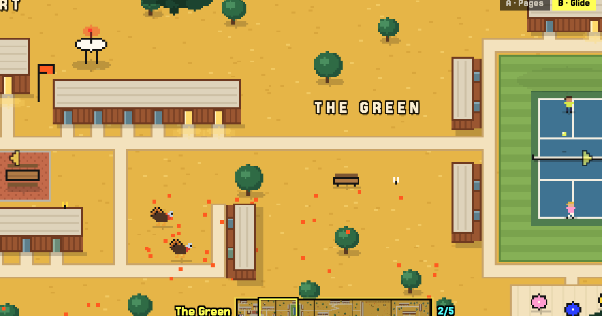

CASBS Quest · layout mockups
The whole campus, two ways
All 54 studies (and 016), without giving up a map that fits on one screen. The live map stays exactly as it is and becomes The Heart; the other studies move into four new neighborhoods, each built around one landmark so none of them is a wall of doors.
- The Heart14 studies · the live map
- The Green10 · the court
- The Hill14 · the switchback
- The Pasture8 · the turkeys
- The Grove9 · the library

APages
Five rooms, one screen each, like an adventure game. Walk off an edge and the next room slides in, with its name and who lives there. The dots jump anywhere and show a little picture of each room.
- Good
- Every screen is a composed picture, like today's map. You always know where you are.
- Cost
- You never see two neighborhoods at once, and the campus reads as rooms more than as one place.

BGlide
One strip, end to end. Scroll, drag or swipe and the campus slides past, branches in front moving faster than the ground; let go and it settles on the nearest neighborhood. The strip at the bottom is the whole campus in miniature.
- Good
- It feels like one place, a walk along the hill, and the miniature shows how far you can go.
- Cost
- The frames in between are less composed than the stops, and there is more motion.